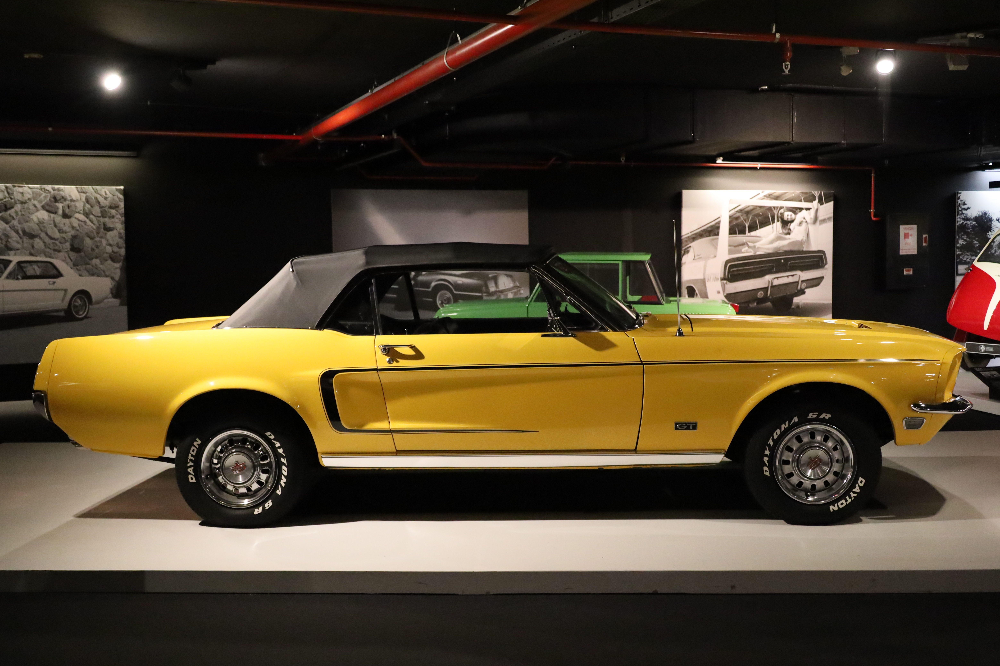

01

01 / 04
AMERICAN CLASSIC · 1960s
Ford Mustang
The car that changed the meaning of American performance.
Born in the golden age of American motoring, the Mustang combined accessible performance with an unmistakable silhouette that became one of the defining shapes of its generation.
ENGINE
4.7L V8
POWER
271 HP
TOP SPEED
210 KM/H
ERA
1960s